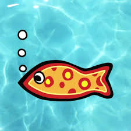

One can contribute in many ways, not only with code and technology. There’s presence, feedback and usage.
And poetry, too. Yes.
Now, a bit of eye pleasing would be in order, imho. I’m sensitive to good art, and I really like to see people using lovely avatars. Really.
Just my 2p, you know. Hence my request: could you fetch away that horrible L avatar of yours, and use something better? Those are for noobs, but now you aren’t anymore.
Moreover, that plain dumb dry letter is spammed all over forum pages, given the number of post you do.
It would be really in order to use an eye-catching something, I don’t know, whatever you like…
Here I googled for “little fish”, for instance. And chose this:

You’re no more a newbie fish. I think you can award yourself the roaming title of “swimming fish”, or whatever.
Next level you’ll be promoted to “fish in the tankard”, or so. And we will talk about contribution and all that again…